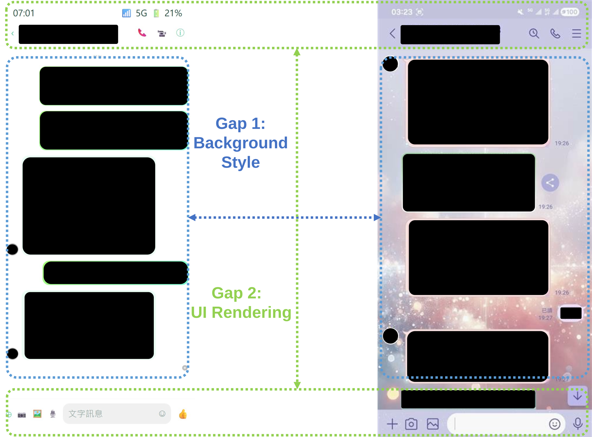
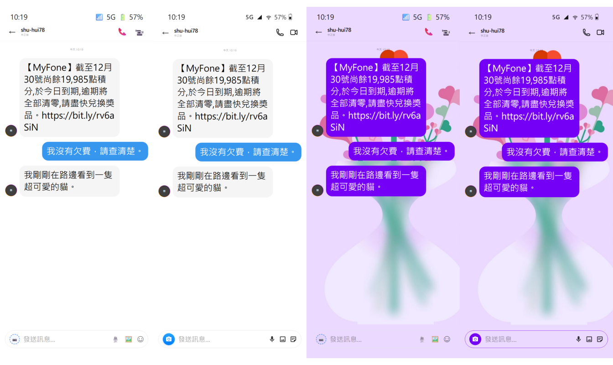
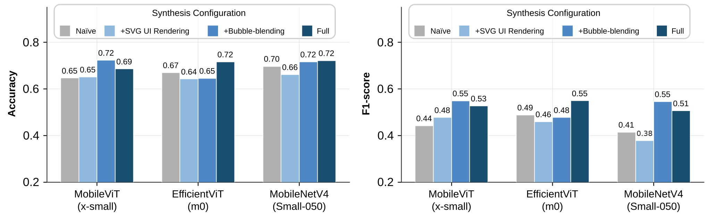

Mobile agents rely heavily on visual routing—a perception-level decision task that determines the UI context of the current screen in order to decide which downstream tool to invoke. For such high-frequency, narrowly-scoped routing subtasks, continual reliance on general-purpose small vision-language models (sVLMs) may impose disproportionate latency and resource overhead on edge devices; we further find that mainstream sVLMs exhibit markedly limited zero-shot performance on this structured task. We therefore argue for replacing sVLMs with a task-specific, ultra-lightweight model (<5M parameters) as the router. Training such a model, however, requires labeled data, and real screenshots involving privacy-sensitive categories (SMS, instant messaging) are difficult to obtain at scale—this data scarcity, not model architecture, is the central challenge this paper addresses. We propose a diagnosis-driven, fine-grained screenshot synthesis methodology: unlike content-agnostic conventional augmentation, we first characterize the visual distribution gap between synthetic and real screenshots using multiple distribution-distance metrics, identifying conversation background style and modern system UI rendering as two dominant sources. We hypothesize that reducing these two gaps improves generalization, and accordingly design two targeted mechanisms—Bubble-blending and modern SVG UI rendering—both of which are shown to reduce the identified gaps. A three-stage progressive evaluation (learnability on synthetic data, transferability to unseen public apps, and generalizability to real screenshots) yields results consistent with this hypothesis, with the combined configuration giving the largest and most consistent gains across backbones, particularly on real data. As one measure of the resulting model's practical utility, a 2.3M-parameter lightweight model trained entirely on synthetic and public data—without a single privacy-sensitive real screenshot—achieves 71.62% accuracy on a real-world test set, outperforming four general-purpose sVLMs with over 100× as many parameters evaluated under zero-shot prompting (e.g., PaliGemma 2 (3B), at 57.98%). These results support diagnosis-driven synthesis as a practical route to training task-specific, edge-deployable models under real-world data-access constraints.
We diagnose before we augment. Our pipeline first uses Playwright to render naïve conversation layouts across 10 phone brands × 10 resolutions. Comparing these naïve synthetic screenshots with real ones, both qualitatively and with distribution-distance metrics (FID, MMD, Cosine Distance), reveals two dominant gaps:

Naïve synthesized screenshot (left) vs. a real IM screenshot (right; redacted).
| Configuration | FID ↓ | MMD ↓ | Cos. Dist. ↓ |
|---|---|---|---|
| Naïve | 108.02 | 0.1458 | 0.1066 |
| + Bubble-blending | 107.32 | 0.1034 | 0.0839 |
| + SVG UI Rendering | 105.91 | 0.1376 | 0.0998 |
| Full | 100.56 | 0.1045 | 0.0819 |
Distribution distance to real screenshots. Both mechanisms narrow the gap.

The same conversation rendered under the four synthesis configurations. Content and layout are held fixed.
Chat bubbles are blended with 124 real themed backgrounds (69 Instagram, 55 LINE). The bubble color is darkened in HSL space based on the background's dominant hue to keep text readable. This applies to instant messaging only, since SMS backgrounds are fixed to the system default.
Character and emoji placeholders are replaced with fine-grained vector reconstructions of the status bar (signal, battery, time), the navigation bar (call, video, camera), and the action bar (microphone, gallery, stickers).
Privacy-safe training data. SMS and IM screenshots are fully synthesized, and the Other category comes from public datasets (RICO, MobileViews-600K). The resulting 8,100-image training set contains zero real conversational screenshots.
We evaluate three lightweight backbones (EfficientViT-M0, MobileViT-XS, MobileNetV4-Conv-Small 0.5×) on progressively harder test sets: Synthesized (learnability) → Public UI (unseen apps) → Wild Anti-Fraud (821 real screenshots).

Accuracy (left) and F1 (right) on the Wild Anti-Fraud test set (821 real screenshots).
| Model | Params | Acc | Prec. | Rec. | F1 |
|---|---|---|---|---|---|
| EfficientViT-M0 (Ours, Full) | 2.3M | 0.7162 | 0.5561 | 0.6653 | 0.5496 |
| Moondream 2 | 0.5B | 0.3666 | 0.4695 | 0.3222 | 0.1987 |
| InternVL2.5 | 1B | 0.4568 | 0.5093 | 0.5604 | 0.3508 |
| PaliGemma 2 | 3B | 0.5798 | 0.5092 | 0.6224 | 0.4577 |
| Phi-3.5-vision | 4.2B | 0.3069 | 0.4208 | 0.5571 | 0.2330 |
Comparison with sVLMs on the Wild Anti-Fraud test set. sVLMs use zero-shot CoT prompting; ours is trained on synthetic and public data only.
@inproceedings{lee2026lightweight,
author = {Lee, Cheng-Che and Cheng, Chia-Pin and Chang, Hsu-Sheng and Chou, Chia-Lin},
title = {Towards Lightweight Visual Routing for Mobile Agents via Fine-Grained Screenshot Synthesis},
booktitle = {NeurIPS 2026 Workshop on On-Device Intelligence: Foundation Models under Real-World Constraints},
year = {2026},
url = {https://openreview.net/forum?id=umdC2BfHOe}
}